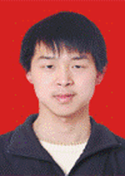

奋臂击天鼓 碧海追师梦
曾坤，男，中共党员，2006年被我校传媒学院广告学专业录取，2007年转入文学院汉语言文学专业学习，曾担任传媒学院广告学专业2006级团支 书、文学院学生党支部副书记、2008年我校赴香港交流团团长。曾获国家奖学金、宝钢教育基金优秀学生特等奖、美德风范奖学金、社会工作奖学金、学有专长 奖学金、教师技能奖学金、全校党支部立项活动突出贡献奖、“赴香港交流团优秀团长”荣誉称号、校“学术十佳”荣誉称号、香港教育学院优秀交流生奖 、香港教育学院课堂学业优秀奖、香港教育学院杰出义工奖、我校文学院对外交流贡献奖、传媒学院首届辩论赛最佳表现奖，并多次荣获校长奖学金、
校“优秀学 生”荣誉称号，入选第一届优秀学业团队成员、第二届优秀党员团队成员、第三届优秀党员团队成员，在省级刊物上发表学术论文三篇，现已保送中国人民大学免试 攻读硕士研究生。对于出生在南方的曾坤来说，东北的冬季漫长，也冷得厉害！但是三年来曾坤坚持每天六点起床，去学院早读，有好几次去得太早，传达室大爷还没开门。大一时，曾坤花了大量时间学英语，一篇课文至少读二三十遍，英语课上老师叫他读课文，他都能胸有成竹地背出来，而且大学英语第一册所有课文他都能倒背如流。大 一学年，曾坤的学分绩点在传媒学院广告学专业2006级排第一名，其中高等数学和统计学都取得了满分。
2007年，带着对文学的向往，曾坤顺利通过学校的转专业考试，转入文学院汉语言文学专业学习。曾坤欣喜若狂，因为他终于找到了实现文学梦的道路。但 是马上碰到巨大的难题，他既要上大二的课，又要补修大一所有的专业课，一周有22大节课，下午第四节与晚上第一节常是连堂，连吃饭也顾不上。但是中国三千 年的文学深深吸引他，并且做一名优秀教师的梦想强烈地激发了他的学习兴趣。他如饥似渴地汲取文学的精华，抓住一分一秒看书的机会。深夜时分，他还在思量着 中国古代作家的作品，体会着其中的文学魅力。暑假，他忍受思乡之苦，留校细细研读了32本中国古代文学方面的学术著作。大二学年，曾坤在2006级汉语言 文学专业202人中又取得了第一名，打破了中文系多年来没有男生考过第一名的局面。
曾坤不仅专业基础知识扎实，而且积极撰写学术论文，在《安徽文学》《青年文学家》等刊物上发表涉及中国古代文学、中国现代文学、美学等方面研究的论文 三篇。他对语文的教学也有独到的见解。他利用自己丰富的古代文学知识及较深厚的地理知识开展了一个研究性课题——高中语文学习与地理学习的互相帮助。他翻 阅许多语文高考试题及地理高考试题和大量地理学科的资料，不断完善自己的研究。去年十月在实习的学校，曾坤为学生做了此研究性课题的讲座，吸引了整个年级 的语文老师来听。他的实习指导老师说：“这个思路很新颖，而且不是为求新而求新，它确实有利于高中生的学习，在一定程度上打破了学科间的壁垒，更重要的是 有助于培养学生的学习兴趣，让学生在高考中有多种解题的思路。”曾坤还积极参与学校的学生科研立项活动，现正进行“师范生视阈下的高校社团建设模式探究” 课题的研究。
2009月9月，曾坤报考了中国人民大学免试研究生。这次报考中国古代文学专业的免试研究生有14人，其他13人全都是来自中国人民大学、复旦大学、 北京师范大学、中山大学、厦门大学、山东大学等“985”大学 ，虽然竞争对手实力强大，但曾坤仍然在笔试和面试中都取得了第一名，后来中国人民大学的老师还在研究生课堂上特意表扬了曾坤。
曾坤不仅学习优秀，而且在学校的社会工作中表现突出。在广告系，曾坤担任广告系团支书，除了学习，就把精力放在系里活动建设上。与其他系团支书联合举 办党史知识介绍活动、动员大家写入党申请书，也多次负责院里党支部资料的整理工作，与高数学习有困难的同学结成互助小组，常给他们讲课。2006年12月 传媒学院举办首届辩论赛，曾坤组织广告系包括他自己在内的四位同学参赛，经过四轮比赛，在全院二十支队伍中荣获第三名，他个人获得最佳表现奖。来到文学 院，担任文学院学生党支部的副书记，大刀阔斧地改革了党支部的运行及管理模式，举办高等数学讲座、珠三角就业讲座、一对一地学习互助活动、帮同学买火车票 等一系列活动，改变了大学里学生党支部与同学学习、生活脱节的尴尬局面，让身边同学感受到了学生党支部存在的意义。2008年曾坤担任东北师范大学赴香港 教育学院交流团团长。在香港交流的有复旦大学、浙江大学等十多所中国大陆大学的学生及泰国、马来西亚、韩国、美国等外国学生。中秋节的晚上，校方将一百多 位交流生组织在一起度中秋，在晚会上，曾坤代表东北师范大学表演节目，即兴作一首七言古诗《咏中秋》，赢得了最热烈的掌声。曾坤一直与各学校的交流生保持 密切联系，并与各学校交流团的团长积极沟通，组织联谊活动，在各种活动中发挥自己积极、热情的性格特点。曾坤熟悉深圳，周末还常去深圳帮其他交流生买东 西，以节省他们的开支，而且每次都是满满两大箱。曾坤带领东北师范大学交流团很好地展示了东北师范大学学生的风采，为东北师范大学在香港教育学院留下了一 抹久的芳香。
2009年11月经过学校严格的筛选，曾坤成为2009年宝钢特等奖候选人，并成为东北师范大学惟一的一名被派去上海参加宝钢教育奖颁奖典礼的学生代 表，全国120所大学会各派出一名特等奖候选人出席并角逐50名特等奖。在颁奖会上，当他看到复旦大学、南开大学、吉林大学、华东师范大学的四位博士生及 厦门大学的一位硕士生都没有获得特等奖时，有些紧张起来，就在这时宝钢基金会理事长微笑着说：“东北师范大学曾坤获得2009年宝钢特等奖！”曾坤的心沸 腾了，这再一次证明东北师范大学的学生与“985”高校的学生相比，也毫不逊色，后来从《中国教育报》上得知，曾坤成为2009年吉林省惟一一名获宝钢特 等奖的学生，并且得票数在师范类大学里排第一名。
2007年，带着对文学的向往，曾坤顺利通过学校的转专业考试，转入文学院汉语言文学专业学习。曾坤欣喜若狂，因为他终于找到了实现文学梦的道路。但 是马上碰到巨大的难题，他既要上大二的课，又要补修大一所有的专业课，一周有22大节课，下午第四节与晚上第一节常是连堂，连吃饭也顾不上。但是中国三千 年的文学深深吸引他，并且做一名优秀教师的梦想强烈地激发了他的学习兴趣。他如饥似渴地汲取文学的精华，抓住一分一秒看书的机会。深夜时分，他还在思量着 中国古代作家的作品，体会着其中的文学魅力。暑假，他忍受思乡之苦，留校细细研读了32本中国古代文学方面的学术著作。大二学年，曾坤在2006级汉语言 文学专业202人中又取得了第一名，打破了中文系多年来没有男生考过第一名的局面。
曾坤不仅专业基础知识扎实，而且积极撰写学术论文，在《安徽文学》《青年文学家》等刊物上发表涉及中国古代文学、中国现代文学、美学等方面研究的论文 三篇。他对语文的教学也有独到的见解。他利用自己丰富的古代文学知识及较深厚的地理知识开展了一个研究性课题——高中语文学习与地理学习的互相帮助。他翻 阅许多语文高考试题及地理高考试题和大量地理学科的资料，不断完善自己的研究。去年十月在实习的学校，曾坤为学生做了此研究性课题的讲座，吸引了整个年级 的语文老师来听。他的实习指导老师说：“这个思路很新颖，而且不是为求新而求新，它确实有利于高中生的学习，在一定程度上打破了学科间的壁垒，更重要的是 有助于培养学生的学习兴趣，让学生在高考中有多种解题的思路。”曾坤还积极参与学校的学生科研立项活动，现正进行“师范生视阈下的高校社团建设模式探究” 课题的研究。
2009月9月，曾坤报考了中国人民大学免试研究生。这次报考中国古代文学专业的免试研究生有14人，其他13人全都是来自中国人民大学、复旦大学、 北京师范大学、中山大学、厦门大学、山东大学等“985”大学 ，虽然竞争对手实力强大，但曾坤仍然在笔试和面试中都取得了第一名，后来中国人民大学的老师还在研究生课堂上特意表扬了曾坤。
曾坤不仅学习优秀，而且在学校的社会工作中表现突出。在广告系，曾坤担任广告系团支书，除了学习，就把精力放在系里活动建设上。与其他系团支书联合举 办党史知识介绍活动、动员大家写入党申请书，也多次负责院里党支部资料的整理工作，与高数学习有困难的同学结成互助小组，常给他们讲课。2006年12月 传媒学院举办首届辩论赛，曾坤组织广告系包括他自己在内的四位同学参赛，经过四轮比赛，在全院二十支队伍中荣获第三名，他个人获得最佳表现奖。来到文学 院，担任文学院学生党支部的副书记，大刀阔斧地改革了党支部的运行及管理模式，举办高等数学讲座、珠三角就业讲座、一对一地学习互助活动、帮同学买火车票 等一系列活动，改变了大学里学生党支部与同学学习、生活脱节的尴尬局面，让身边同学感受到了学生党支部存在的意义。2008年曾坤担任东北师范大学赴香港 教育学院交流团团长。在香港交流的有复旦大学、浙江大学等十多所中国大陆大学的学生及泰国、马来西亚、韩国、美国等外国学生。中秋节的晚上，校方将一百多 位交流生组织在一起度中秋，在晚会上，曾坤代表东北师范大学表演节目，即兴作一首七言古诗《咏中秋》，赢得了最热烈的掌声。曾坤一直与各学校的交流生保持 密切联系，并与各学校交流团的团长积极沟通，组织联谊活动，在各种活动中发挥自己积极、热情的性格特点。曾坤熟悉深圳，周末还常去深圳帮其他交流生买东 西，以节省他们的开支，而且每次都是满满两大箱。曾坤带领东北师范大学交流团很好地展示了东北师范大学学生的风采，为东北师范大学在香港教育学院留下了一 抹久的芳香。
2009年11月经过学校严格的筛选，曾坤成为2009年宝钢特等奖候选人，并成为东北师范大学惟一的一名被派去上海参加宝钢教育奖颁奖典礼的学生代 表，全国120所大学会各派出一名特等奖候选人出席并角逐50名特等奖。在颁奖会上，当他看到复旦大学、南开大学、吉林大学、华东师范大学的四位博士生及 厦门大学的一位硕士生都没有获得特等奖时，有些紧张起来，就在这时宝钢基金会理事长微笑着说：“东北师范大学曾坤获得2009年宝钢特等奖！”曾坤的心沸 腾了，这再一次证明东北师范大学的学生与“985”高校的学生相比，也毫不逊色，后来从《中国教育报》上得知，曾坤成为2009年吉林省惟一一名获宝钢特 等奖的学生，并且得票数在师范类大学里排第一名。